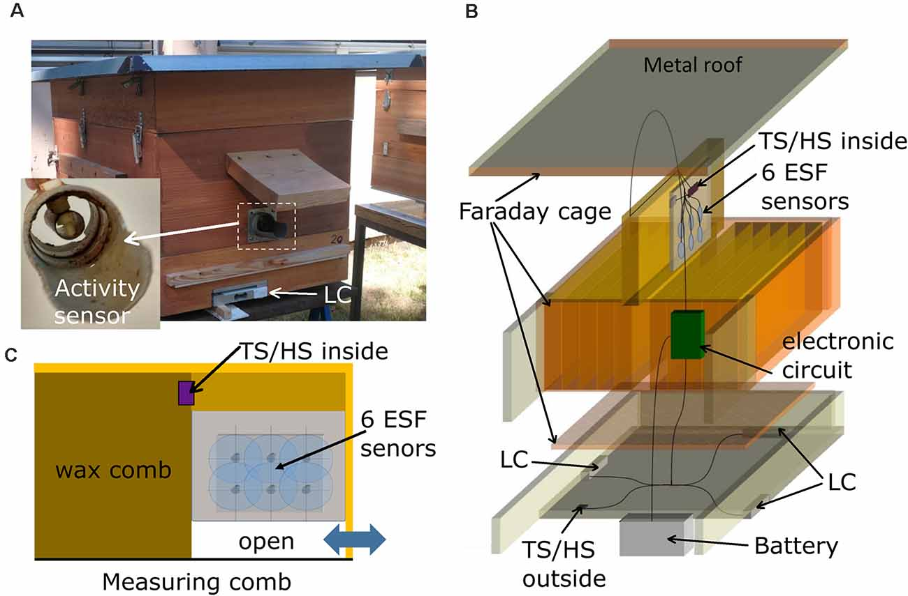

The secret life of bee signals can communicate colony health
aperture':'0','credit':'','camera':'','caption':'','created_timestamp':'0','copyright':'','focal_length':'0','iso':'0','shutter_speed':'0','title':'','orientation':'1'}' data-image-title='frontiers-behavioral-neuroscience-honeybee-hive-health-behavior-monitoring-esf-electrostatic-field' data-large-file='https://frontiersinblog.files.wordpress.com/2021/05/frontiers-behavioral-neuroscience-honeybee-hive-health-behavior-monitoring-esf-electrostatic-field.jpg?w=940' data-medium-file='https://frontiersinblog.files.wordpress.com/2021/05/frontiers-behavioral-neuroscience-honeybee-hive-health-behavior-monitoring-esf-electrostatic-field.jpg?w=300' data-orig-file='https://frontiersinblog.files.wordpress.com/2021/05/frontiers-behavioral-neuroscience-honeybee-hive-health-behavior-monitoring-esf-electrostatic-field.jpg' data-orig-size='1300,855' data-permalink='https://blog.frontiersin.org/frontiers-behavioral-neuroscience-honeybee-hive-health-behavior-monitoring-esf-electrostatic-field/' sizes='(max-width: 1024px) 100vw, 1024px' src='https://frontiersinblog.files.wordpress.com/2021/05/frontiers-behavioral-neuroscience-honeybee-hive-health-behavior-monitoring-esf-electrostatic-field.jpg' srcset='https://frontiersinblog.files.wordpress.com/2021/05/frontiers-behavioral-neuroscience-honeybee-hive-health-behavior-monitoring-esf-electrostatic-field.jpg?w=1024 1024w, https://frontiersinblog.files.wordpress.com/2021/05/frontiers-behavioral-neuroscience-honeybee-hive-health-behavior-monitoring-esf-electrostatic-field.jpg?w=150 150w, https://frontiersinblog.files.wordpress.com/2021/05/frontiers-behavioral-neuroscience-honeybee-hive-health-behavior-monitoring-esf-electrostatic-field.jpg?w=300 300w, https://frontiersinblog.files.wordpress.com/2021/05/frontiers-behavioral-neuroscience-honeybee-hive-health-behavior-monitoring-esf-electrostatic-field.jpg?w=768 768w, https://frontiersinblog.files.wordpress.com/2021/05/frontiers-behavioral-neuroscience-honeybee-hive-health-behavior-monitoring-esf-electrostatic-field.jpg 1300w'>
Posted On: 2021-05-04T00:00:00
Posted By: Nora Belblidia

Content Date: 2021-05-04
Download Date: 2021-07-10
Document ID: L0C04F1AC